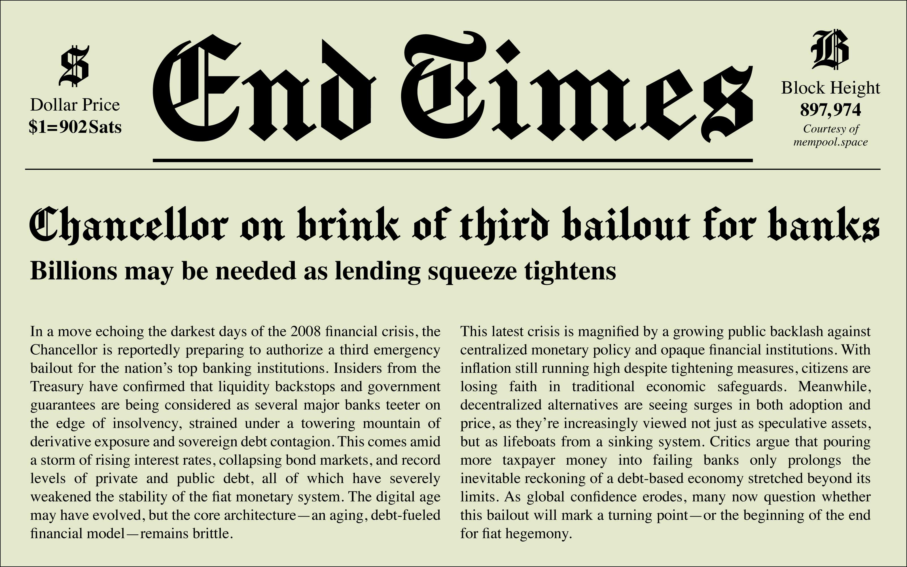

Ah, Manufacturing Consent—the font that doesn’t just scream “serious journalism,” it calmly editorializes it in 144-point Fraktur while subtly nudging your worldview. A glorious typographic wolf in Pulitzer-winning sheep’s clothing, this typeface borrows its gravitas from the New York Times masthead and then cheekily slaps a Noam Chomsky title on it, because irony is the last frontier of design. Perfect for your zine, blog, or rogue press release about how pigeons are government surveillance drones.
Forked from the esteemed “Chomsky” font, Manufacturing Consent is for those who want their typography to look like it went to an Ivy League school but dropped out to start a podcast. Whether you're toppling empires or just mocking brunch culture, this free and open-source beauty lets you do it in blackletter style. Because nothing says “I read the footnotes” like vintage typographic propaganda dressed as objective truth.
To contribute, please see github.com/googlefonts/manufacturing-consent-font.
